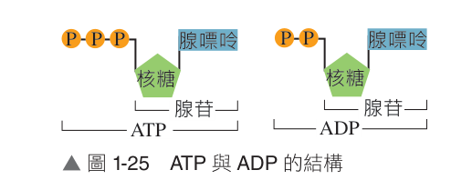

1-2.1 細胞中能量的獲得與轉換（一）
焦點：細胞代謝作用的定義、同化代謝與異化代謝
💡 單元前導思維： 細胞獲得能量後，才得以進行各種生理作用，但細胞中的能量是從何而來的呢？
一、細胞內的代謝作用
1. 定義： 細胞中化學反應的進行，常伴隨著能量的轉換。
2. 分類： 可分為 同化代謝 與 異化代謝 。
3. 代謝作用的比較
種類
說明
能量變化
生化實例
同化代謝 (合成作用) 細胞將較簡單分子合成為較複雜分子
需加入能量(需能反應 / 吸能)
葡萄糖＋果糖＋能量
異化代謝 (分解作用) 細胞將較複雜分子分解成較簡單分子
有能量釋出(釋能反應 / 放能)
葡萄糖＋氧
4. 人體的醣類代謝實例
(1) 攝食含澱粉的食物 → 澱粉被消化成葡萄糖 → 葡萄糖經細胞吸收。
(2) 細胞藉 異化代謝 將葡萄糖分解成較小分子的二氧化碳及水，並釋出能量。
(3) 肝細胞及肌肉細胞可將葡萄糖經由 同化代謝 合成較大分子的肝醣，過程需要消耗能量。
1-2.1 細胞中能量的獲得與轉換（二）
焦點：腺苷三磷酸（ATP）的結構組成與水解合成轉換
二、腺苷三磷酸（ATP）
1. 組成： 核苷酸 的一種，由 腺嘌呤 、核糖 和 三個磷酸基 所組成。
(1) 若由腺嘌呤、核糖和兩個磷酸基所組成，稱為 腺苷二磷酸（ADP） 。
(2) ATP 與 ADP 的轉換伴隨著能量的儲存或釋放，兩者之間的轉換可協助細胞能量的使用。

▲ 圖 1-25 ATP 與 ADP 的結構比較
💡 延伸補充：AMP
核糖上若僅接一個磷酸基時，稱為
腺苷單磷酸（AMP） 。
腺嘌呤＋核糖 ＝ 腺苷（Adenosine）
腺苷＋1磷酸＝AMP；＋2磷酸＝ADP；＋3磷酸＝ATP。
2. ATP 的合成與水解
(1) 細胞內的需能反應（合成）或釋能反應（分解），過程中有能量的投入或釋出，因此細胞內 ATP 的分解與合成常伴隨其他物質的需能或釋能反應一起進行。
(2) ATP 的分解本身為 釋能反應 ，可釋出能量，因此常伴隨胞內物質的 需能反應 一起進行。
(3) ATP 的合成本身為 需能反應 ，需要能量的提供才可進行，因此常伴隨胞內物質的 釋能反應 一起進行。
項目
需能反應（合成伴隨）
釋能反應（分解伴隨）
ATP 變化 ATP 的分解：
ATP 的合成：
ATP 本身能量變化 釋能反應 （放出能量供反應利用）需能反應 （吸收反應釋出之能量）
伴隨之胞內反應 ATP 的分解促使胞內其他物質合成
胞內其他物質分解促使 ATP 的合成
1-2.1 細胞中能量的獲得與轉換（三）
焦點：ATP 的重要性、能量貨幣概念與生理功能應用
三、ATP 的重要性
1. 細胞所需能量的直接來源： 可作為細胞內通用的 能量貨幣 （能量代幣）。
(1) 細胞進行各種生理作用所需的能量，無法 由葡萄糖分解直接提供。
(2) 必須先將葡萄糖中的能量轉移至 ATP ，再藉由 ATP 水解釋出能量，才能提供細胞利用。
2. 提供同化代謝所需的能量： 如胺基酸合成蛋白質、單醣合成肝醣或澱粉等。
3. 提供細胞運動與運輸能量： 物質的 主動運輸 、肌肉收縮，以及鞭毛、纖毛運動等生理作用能量。
⚡ 觀念釐清：為什麼細胞需要「能量貨幣」ATP？
一分子葡萄糖徹底分解所釋放的能量極為巨大（約 686 kcal/mol），若直接一次性釋放，會使細胞局部劇烈升溫而破壞蛋白質與膜結構；而一分子 ATP 水解為 ADP 約釋放 7.3 kcal/mol，大小適中，隨取隨用，如同將大面額鈔票兌換成「零錢」，精準供應細胞微細生化反應。
4. ATP-ADP 循環的生理調節機制
細胞內狀態
代表意義
促成之生理調節反應
ATP 多而 ADP 少(ADP / ATP 比值低)
表示細胞內能量較充裕
生物傾向進行需能反應 ：
ATP 少而 ADP 多(ADP / ATP 比值高)
表示細胞內能量較缺乏
生物體需加速進行產能反應 ：
📌 ATP 提供能量之生理功能範疇（圖 1-28 核心）：
① 物質跨膜運輸 消耗 ATP 逆濃度梯度進行主動運輸（如鈉鉀幫浦）
② 機械運動 骨骼肌肌原纖維滑動收縮、精子鞭毛與呼吸道纖毛擺動
③ 生物合成 DNA 複製、轉錄、蛋白質轉譯及各類多醣合成
1-2.1 隨堂實戰評量
基礎練習（1-2.1 代謝與 ATP 評量題組）
基礎練習（點擊題目可開合全題答案與解析）
（ D ）
1. 下列有關 ATP 的敘述，何者正確？
(A) 是一種核酸
(B) 有兩個磷酸根
(C) 以淨能量變化來說，ATP → ADP ＋ Pi 本身為需能反應
(D) ATP 所釋出的能量可使許多生理作用得以進行
💡 解析展開（點擊顯示 / 隱藏）：
(A) ATP 是一種核苷酸（含有核糖、腺嘌呤及三個磷酸基），並非聚合成鏈的核酸；
（ B ）
2. 請問下列何種細胞生理反應的進行不需伴隨著 ATP 的分解？
(A) 胞內醣類的同化代謝
(B) 胞內醣類的異化代謝
(C) 肌肉收縮
(D) 胞內細胞質的流動
💡 解析展開（點擊顯示 / 隱藏）：
細胞內醣類的異化代謝（如葡萄糖的有氧呼吸或發酵分解）本身為「釋能反應」，不需要分解 ATP 來提供能量，其釋出的化學能反而可用來推動 ADP ＋ Pi 合成 ATP。而 (A)同化合成、(C)肌肉收縮、(D)細胞質流動均屬消耗能量的生理活動，皆須伴隨 ATP 分解。
（ A ）
3. 下列哪一個化學反應可以和 ATP 的合成伴隨一起進行？
(A) 葡萄糖 → 二氧化碳＋水
(B) 甘油＋脂肪酸 → 脂質
(C) 胺基酸 → 蛋白質
(D) 葡萄糖 → 澱粉
💡 解析展開（點擊顯示 / 隱藏）：
ATP 的合成本身需要吸收能量（需能反應），因此必須伴隨著某個「物質分解釋能（異化代謝）」的反應一起進行（能量耦聯）。(A)葡萄糖分解為二氧化碳和水為放能的呼吸作用，可伴隨 ATP 合成；(B)、(C)、(D)皆為小分子合成大分子的吸能反應，需伴隨 ATP 的分解。
1-2.2 光合作用與呼吸作用（一）
焦點：生態系能量流動、光能轉換與呼吸作用能量釋出
一、能量的獲得與轉換
1. 能量的獲得：
(1) 生命世界的能量大部分直接或間接來自 光能 （太陽光輻射能）。
(2) 部分生物體（如植物與藻類、藍綠菌）能進行 光合作用 ，將光能轉換成 化學能 ，儲存在醣類等有機物中以供本身或其他生物使用。
2. 能量的轉換：
(1) 植物體內儲存的養分以醣類、脂質和蛋白質等大分子形式存在，當植物發育需要能量時，這些大分子便先分解為葡萄糖等小分子，再進行 呼吸作用 將有機物分解以釋出能量。
(2) 呼吸作用產生的能量，部分釋出的能量用來合成 ATP ，部分則以 熱能 形式散失。
(3) ATP 的化學能可再轉換成為光能、熱能、機械能、電能等不同能量形式，以提供生物生理作用所需。
🔄 生態世界能量流動與胞器能量轉換全貌（圖 1-29 觀念核心）
☀️ 太陽光（光能）
➔ 葉綠體行光合作用 ➔
🌿 醣類＋O₂（化學能）
🌿 醣類＋O₂
➔ 粒線體行呼吸作用 ➔
⚡ ATP（化學能）＋ H₂O＋CO₂
💡 深度整合思考：
● 物質循環： 光合作用的產物（醣類與氧）恰為有氧呼吸的原料；有氧呼吸的產物（水與二氧化碳）恰為光合作用的原料，物質在生態系中可不斷循環運轉。能量單向流動： 能量在轉化過程中會以「熱能」形式不斷向太空發散，無法 100% 循環回收，因此生命世界必須持續仰賴太陽光能的注入。
1-2.2 光合作用與呼吸作用（二）
焦點：光合作用定義、葉綠體構造與光反應／固碳反應歷程
二、光合作用的定義與場所
1. 定義： 生物體利用光能將二氧化碳和水合成醣類，並產生氧的過程。
2. 代謝種類： 同化代謝 （吸能合成作用）。
3. 進行生物： 植物、藻類、藍綠菌 （原核生物，無葉綠體但具光合色素膜片）。
4. 植物光合作用簡式： 水 ＋ 二氧化碳 ――(光能 / 葉綠體)――→ 醣類 ＋ 氧 ＋ 水
5. 光合作用的兩大反應階段
(1) 光反應 ：吸收光能並將光能轉換成化學能（ATP、NADPH），以提供給固碳反應，過程中伴隨著水分子分解 並釋出 氧氣（O₂） 。
(2) 固碳反應 ：將 二氧化碳（CO₂） 固定以合成醣類的反應，過程中以光反應產生的化學能作為能量來源。
6. 葉綠體構造與反應場所對應
(1) 葉綠體： 雙層膜胞器，內含由扁平囊狀構造疊合而成的葉綠餅 以及充填其間的基質 。
(2) 類囊體膜： 膜上含有葉綠素、類胡蘿蔔素等光合色素，可吸收光能，是進行 光反應 的場所。
(3) 基質： 葉綠餅外至內膜間的液態基質，富含多種酵素以固定二氧化碳合成醣類，是進行 固碳反應 的場所。
1-2.2 光合作用與呼吸作用（三）
焦點：光反應與固碳反應詳細比較、NADPH 與影響光合作用因素
三、光反應與固碳反應深度比較
項目
光反應
固碳反應（卡爾文循環）
反應目的 吸收光能轉換成化學能，儲存於 ATP 及 NADPH 中
利用 ATP 與 NADPH 提供之能量，將 CO₂ 固定以合成醣類
反應條件 必須在光照下 才能進行依賴光反應能量，酵素活性受光刺激，主要於白天 進行
反應位置 葉綠體的 類囊體膜
葉綠體的 基質
反應過程 葉綠素吸收光能，水分子裂解產生 O₂ 、電子與 H⁺，生成 ATP 與 NADPH
利用 ATP 與 NADPH 提供的能量，將 CO₂ 還原固定，合成 醣類
能量轉換 光能 → ATP 與 NADPH 的化學能
ATP 與 NADPH 的化學能 → 醣類中的化學能
反應簡式 H₂O ＋ ADP ＋ Pi ＋ NADP⁺O₂ ＋ ATP ＋ NADPH
CO₂ ＋ ATP ＋ NADPH醣類 ＋ ADP ＋ Pi ＋ NADP⁺
💡 延伸補充：光反應中的高能分子 NADPH
NADPH 是一種核苷酸輔酶衍生物，其低能量氧化態為 NADP⁺ 。在光反應中接收水裂解釋放的電子與 H⁺ 還原為高能態的 NADPH ，進入基質提供固碳反應合成醣類所需的「高能電子與還原力」，之後變回 NADP⁺ 再循環利用，並無淨消耗。
四、影響光合作用速率的四大環境因素
1. 光照強度： 在一定範圍內，光愈強速率愈快；但光照過強時會造成光抑制，葉綠素遭強光破壞，速率反而下降。
2. 溫度： 在最適溫度範圍內，溫度愈高酵素活性愈高；若溫度過高，類囊體膜與固碳酵素會變性破壞，速率驟降。
3. 二氧化碳濃度： CO₂ 為固碳反應原料，在一定範圍內，CO₂ 濃度愈高，速率愈快，達到飽和點後維持定值。
4. 水分含量： 水為光反應原料，土壤缺水會導致植物保衛細胞失水關閉氣孔，阻礙 CO₂ 進入，大幅抑制光合作用。
1-2.2 光合作用與呼吸作用（四）
焦點：呼吸作用定義類型、有氧呼吸兩階段歷程（糖解與粒線體反應）
五、呼吸作用定義與類型
1. 定義： 細胞藉由一系列酵素的催化，將葡萄糖等有機化合物逐步分解，釋出能量合成 ATP 的過程。
2. 類型：
(1) 需要氧： 細胞利用氧氣進行的 有氧呼吸 ，能徹底分解葡萄糖產生大量 ATP，為多數細胞首選。
(2) 無需氧： 在缺氧或無氧環境中進行的 發酵作用 ，僅產生少量 ATP，維持細胞短期生理需求。
六、有氧呼吸（Aerobic Respiration）
1. 代謝種類： 異化代謝 （放能分解作用）。
2. 能量轉換： 釋出的能量一部份用以合成 ATP，另一大部分則以熱能散失。
3. 有氧呼吸總反應簡式： 葡萄糖 ＋ 氧 → 水 ＋ 二氧化碳 ＋ 能量（多量 ATP）
4. 進行的兩大階段過程：
(1) 第一階段（糖解作用 ）：在 細胞質 中進行，將 1 分子葡萄糖初步分解成 2 分子 丙酮酸 ，並釋出 少量 ATP （淨產 2 ATP）。此步驟不需氧氣參與。
(2) 第二階段（粒線體反應 ）：在氧氣充足時，丙酮酸進入 粒線體 ，經酵素催化徹底分解，產生 二氧化碳 和 水 ，並釋出 多量 ATP 。
1-2.2 光合作用與呼吸作用（五）
焦點：發酵作用定義場所、酒精發酵 vs 乳酸發酵
七、發酵作用（Fermentation）
1. 定義： 某些細胞在 氧氣不足 情況下仍可進行發酵作用，將醣類不完全分解產生少量的 ATP，以暫時維持細胞生理功能。
2. 場所： 全過程皆在 細胞質 中進行，不進入粒線體。
3. 過程特性：
(1) 先在細胞質中進行糖解作用，將葡萄糖分解成丙酮酸，並釋出少量的 ATP（淨產 2 ATP）。
(2) 丙酮酸留在細胞質中再轉變成酒精（酒精發酵）或乳酸（乳酸發酵）。
(3) 關鍵注意： 丙酮酸變為酒精或乳酸的過程 不產生能量 ，因此發酵作用釋出的能量比有氧呼吸少得多。
4. 兩大發酵反應簡式
(1) 酒精發酵 ：葡萄糖 → 酒精 ＋ 二氧化碳 ＋ 能量（少量 ATP） （酵母菌、缺氧浸水之植物根細胞）
(2) 乳酸發酵 ：葡萄糖 → 乳酸 ＋ 能量（少量 ATP） （乳酸菌、劇烈運動缺氧時之人類骨骼肌細胞）
5. 呼吸作用過程統整比較
步驟名稱
發生部位
發生的細胞類型
主要反應歷程
分解葡萄糖
細胞質
所有活細胞（普遍存在）
葡萄糖分解成丙酮酸，並產生少量 ATP
產生酒精
細胞質
酵母菌與植物細胞（缺氧時）
丙酮酸 → 酒精 ＋ 二氧化碳
產生乳酸
細胞質
人類骨骼肌細胞與乳酸菌
丙酮酸 → 乳酸（不產生 CO₂ ）
1-2.2 隨堂實戰評量
光合作用與呼吸作用綜合比較 & 基礎練習題組
八、光合作用和呼吸作用綜合比較
比較種類
光合作用
呼吸作用
進行生物 植物、藻類和藍綠菌
所有活細胞 皆會進行
進行場所 真核於 葉綠體
真核於 細胞質與粒線體
進行時間 主要在有光的時候 進行
活細胞隨時隨地（日夜皆可） 進行
能量變化 光能 → 化學能（儲存於醣類中）
化學能（有機物）→ 化學能（ATP）＋ 熱能
代謝種類 同化代謝 異化代謝
反應原料與產物 原料：CO₂、H₂O醣類、O₂ 、H₂O
原料：葡萄糖（及 O₂）
基礎練習（點擊題目可開合全題答案與解析）
（ A ）
1. 下列哪一物質與植物光合作用的固碳反應無直接相關？
(A) 氧
(B) 二氧化碳
(C) 酵素
(D) ATP
💡 解析展開：
固碳反應是以二氧化碳為原料，利用光反應提供的 ATP 和 NADPH 作為能量與還原力，在基質酵素催化下合成醣類與水。而「氧氣（O₂）」是光反應中水分子光解時產生的副產物，直接釋出至細胞外，與固碳反應無直接相關。
（ C ）
2. 光合作用包括下列步驟：(甲)產生 ATP；(乙)水分子被分解；(丙)葉綠素吸收光能；(丁)合成醣類；(戊)ATP 和 NADPH 釋出能量。請問正確步驟依序為何？
(A) 甲乙丙丁戊
(B) 丙乙甲丁戊
(C) 丙乙甲戊丁
(D) 乙甲丙戊丁
💡 解析展開：
光合作用完整歷程步驟：(丙)葉綠素吸收光能 → (乙)水分子被光解分解並釋出氧氣 → (甲)光反應產生高能分子 ATP 與 NADPH → (戊)進入固碳反應，ATP 和 NADPH 水解釋出能量與高能電子 → (丁)二氧化碳被還原合成醣類。故正確順序為 (丙)(乙)(甲)(戊)(丁)。
（ C ）
3. 下列對呼吸作用的敘述，何者不正確？
(A) 呼吸作用可釋出能量
(B) 有氧呼吸的主要場所在細胞質與粒線體內
(C) 呼吸作用能將葡萄糖內的能量完全轉移至 ATP
(D) 發酵作用亦是一種呼吸作用
💡 解析展開：
(C) 呼吸作用分解有機物釋出的能量，只有大約 34%～40% 轉化儲存於 ATP 化學鍵中，其餘超過 60% 的能量皆以「熱能」形式散失至環境中（用以維持生物體溫），無法 100% 完全轉移至 ATP。
課後實戰演練 · 單選題（一）
基礎核心概念測驗（第 1～4 題）
一、單選題（點選題號開合整題答案與詳細解析）
（ B ）
1. 請問下列何選項並非光合作用進行時所需要參與的？
(A) 水
(B) 氧氣
(C) 二氧化碳
(D) 葉綠素
💡 解析展開：
氧氣（O₂）是光反應中水分子被光解後的「產物」，而非反應進行前所需要的參與物（反應物或色素）。水是光反應原料，二氧化碳是固碳反應原料，葉綠素是吸收光能的光合色素。
（ D ）
2. ATP 是細胞內的能量代幣，在細胞內扮演能量傳遞的角色，因此細胞內有多種反應都可產生 ATP，但下列哪一項反應並不會產生 ATP 分子？
(A) 發酵作用
(B) 蛋白質的分解
(C) 粒線體內進行的呼吸作用
(D) 葉綠體內的固碳反應
💡 解析展開：
(D) 葉綠體基質內的固碳反應為「需能合成作用」，過程中會消耗（水解）光反應產生的 ATP 與 NADPH 來將 CO₂ 合成醣類，反應過程本身絕不會產生 ATP；(A)發酵作用經由糖解淨產生 2 ATP；(B)蛋白質水解分解有機物釋能可伴隨 ATP 合成；(C)粒線體內氧化磷酸化會產生大量 ATP。
（ A ）
3. 下列哪個因素最有可能同時影響光合與呼吸作用的進行？
(A) 溫度
(B) 二氧化碳濃度
(C) 氧的濃度
(D) 光照
💡 解析展開：
光合作用與呼吸作用均為細胞內高度仰賴「酵素催化」的一連串複雜生化反應，而「溫度」會直接改變酵素分子的構形與活性（低溫活性受抑、過高溫酵素變性失活），故溫度必然同時顯著影響光合作用與呼吸作用的進行。二氧化碳與光照主要影響光合作用；氧濃度主要影響呼吸作用。
（ D ）
4. 下列有關植物細胞光合作用的敘述何者正確？
(A) 類囊體的酵素負責進行光能的收集
(B) 過程中不會有氧氣的產生
(C) 光反應產生的二氧化碳可做為固碳反應的原料
(D) 其主要產物為葡萄糖
💡 解析展開：
(A) 類囊體膜上的「光合色素（葉綠素、類胡蘿蔔素等）」負責吸收與收集光能，酵素主要催化化學反應；
課後實戰演練 · 單選題（二）
進階呼吸發酵比較與能量循環題組（第 5～8 題）
一、單選題（續）
（ A ）
5. 下列關於植物細胞的有氧呼吸和發酵作用的比較，何者正確？
(A) 產物均有二氧化碳
(B) 有氧呼吸均在粒線體進行；發酵作用均在細胞質進行
(C) 發酵作用能產生較多 ATP
(D) 有氧呼吸與發酵作用皆為同化作用
💡 解析展開：
(A) 正確，植物細胞在缺氧時進行酒精發酵，產物為酒精與二氧化碳；而有氧呼吸徹底氧化葡萄糖產物亦有二氧化碳；
（ C ）
6. 下列有關酒精發酵和乳酸發酵的比較，何者正確？
(A) 兩者皆產生二氧化碳
(B) 兩者皆不產生二氧化碳
(C) 前者產生二氧化碳，後者則無
(D) 後者產生二氧化碳，前者則無
💡 解析展開：
酒精發酵總反應：葡萄糖(C₆) → 2 酒精(C₂) ＋ 2 CO₂ ＋ 2 ATP；乳酸發酵總反應：葡萄糖(C₆) → 2 乳酸(C₃) ＋ 2 ATP。因此酒精發酵有產生 CO₂（使發酵麵糰膨脹、酒類產生氣泡），而乳酸發酵不產生 CO₂。
（ A ）
7. 下列何者為酒精發酵與乳酸發酵的共同特徵？
(A) 均以葡萄糖做為原料
(B) 均會產生二氧化碳
(C) 一個葡萄糖分子產生的 ATP 量不同
(D) 一個屬於同化代謝，另一個屬於異化代謝
💡 解析展開：
(A) 正確，兩者第一階段均是以葡萄糖為原料進行糖解作用；
（ B ）
8. 附圖中，如果 Ⅰ 代表水和二氧化碳，則下列敘述何者正確？
(A) 甲是呼吸作用，Ⅱ 是醣類、氧和水，乙是光合作用
(B) 甲是光合作用，Ⅱ 是醣類、氧和水，乙是呼吸作用
(C) 甲是呼吸作用，Ⅱ 是二氧化碳和水，乙是光合作用
(D) 甲是光合作用，Ⅱ 是二氧化碳和水，乙是呼吸作用
💡 解析展開：
Ⅰ 為水和二氧化碳，經過「甲反應」合成出 Ⅱ（醣類、氧和水），此過程為植物吸收光能進行的「光合作用」；Ⅱ 物質再經過「乙反應」氧化分解釋能，生成水和二氧化碳（Ⅰ），此反應為「呼吸作用」。故甲為光合作用、乙為呼吸作用，正確選項為 (B)。
課後實戰演練 · 多選題（一）
能量調控與生化反應機轉題組（第 1～3 題）
二、多選題（點選題號開合整題答案與詳細解析）
（ CD ）
1. 附圖為 ATP 循環，請問下列何種細胞生理機制會促進甲反應的發生？（應選 2 項）
(A) 骨骼肌的有氧呼吸
(B) 骨骼肌的發酵作用
(C) 骨骼肌的收縮
(D) 葉綠體的固碳反應
(E) 葉綠體的光反應
ATP
ADP+Pi
甲反應
➔ 放出能量
乙反應
吸收能量 ➔
▲ 圖 1-ATP循環
💡 解析展開：
由圖可知，甲反應是「ATP 水解為 ADP ＋ Pi 並釋出能量」的釋能過程，常伴隨「需能反應（如物質合成、肌肉運動）」進行。選項中：
（ CDE ）
2. 植物進行光合作用固碳反應的反應物和產物包括下列哪些？（應選 3 項）
(A) 氧
(B) 水
(C) ATP
(D) 二氧化碳
(E) NADPH
💡 解析展開：
固碳反應（卡爾文循環）的反應原料包括來自大氣的二氧化碳 (D)，以及來自光反應提供的高能量分子 ATP (C) 與 NADPH (E)；反應後產物包含醣類、ADP、Pi、NADP⁺ 以及水。氧氣 (A) 則是光反應中水裂解的副產物，不參與固碳反應。故選 (C)(D)(E)。
（ ABC ）
3. 當細胞內 ADP ／ ATP 比值太低時，可能會促使細胞進行下列哪些反應？（應選 3 項）
(A) 葡萄糖的合成
(B) 肝醣的合成
(C) 醣類轉化成脂質
(D) 蛋白質分解成眾多胺基酸
(E) 脂質的分解
💡 解析展開：
ADP ／ ATP 比值太低，代表細胞內 ATP 濃度極高、能量充裕！此時細胞不再急需分解有機物產能，而是傾向消耗多餘能量進行「同化合成」與養分儲存：
課後實戰演練 · 多選題（二）
ATP 結構特性與發酵 vs 有氧呼吸深度表格比較（第 4～5 題）
二、多選題（續）
（ BDE ）
4. 下列有關 ATP 的敘述，哪些正確？（應選 3 項）
(A) 是一種含有高能量的核酸
(B) 中文名稱為腺苷三磷酸
(C) 由去氧核糖、腺嘌呤和三個磷酸所構成
(D) 可分解成 ADP 和一個磷酸
(E) 當細胞內 ATP 較多時，有利於進行合成反應
💡 解析展開：
(A) ATP 是一種單個的「核苷酸」，並非由核苷酸聚合而成的大分子聚合物「核酸（如 DNA、RNA）」；
（ ADE ）
5. 發酵作用和有氧呼吸的比較，哪些選項正確？（應選 3 項）
選項／比較項目
發酵作用
有氧呼吸
(A) 原料 葡萄糖
葡萄糖
(B) 作用場所 細胞質
粒線體
(C) 產物 二氧化碳、水
酒精、二氧化碳
(D) 有無產生 ATP 有
有
(E) ATP 數量 少
多
💡 解析展開：
(A) 正確，兩者第一步皆是以葡萄糖為起始原料進行糖解；
課後實戰演練 · 多選題（三）
固碳反應機轉與光合 vs 有氧呼吸全方位比較（第 6～7 題）
二、多選題（續）
（ BCD ）
6. 下列有關植物固碳反應的敘述哪些正確？（應選 3 項）
(A) 在黑暗中效率較高
(B) 在有光的情況下效率較高
(C) 可將二氧化碳合成為醣類
(D) 在葉綠體的基質中進行
(E) 需要 ATP 與 NADP⁺ 的參與
💡 解析展開：
(A)(B) 固碳反應雖不直接吸收光能，但其反應極度依賴光反應所產生的化學能（ATP）與還原力（NADPH），且基質中部分關鍵酵素（如 Rubisco）需要光的間接活化，因此「在有光情況下效率較高」，在持續黑暗中很快會因缺乏 ATP 與 NADPH 而停擺；
（ ADE ）
7. 有關真核生物的光合作用和有氧呼吸的比較，下列哪些正確？（應選 3 項）
選項／比較項目
光合作用
有氧呼吸
(A) 化學反應 同化代謝
異化代謝
(B) 進行生物 植物與藻類
只有動物
(C) 進行時間 只在白天進行
只在夜間進行
(D) 能量變化 光能 → 化學能
化學能 → 化學能
(E) 進行場所 葉綠體
細胞質及粒線體
💡 解析展開：
(A) 正確，光合作用為吸能合成的同化代謝，有氧呼吸為放能分解的異化代謝；
1-2 全章核心重點整理與思維導圖
結構體系化網絡 · 大考觀念避坑指南
一、細胞能量流動核心網絡全景
☀️ 太陽光能
➔ 光合作用 ➔
🌱 葡萄糖化學能
➔ 呼吸作用 ➔
⚡ ATP 能量貨幣
➔ 生理作用 ➔
🏃 生理功＋熱能
二、重要常考概念對照與避坑清單
常見迷思觀念
正確觀念剖析
大考關鍵提場點
「ATP 是一種核酸」 ATP 是含有一個核糖、一個腺嘌呤與三個磷酸基的「單個核苷酸」 ，並非核酸。
核酸（DNA/RNA）是由成千上萬個核苷酸聚合而成的大分子鏈。
「植物白天光合、晚上呼吸」 植物活細胞白天與夜晚隨時都在進行呼吸作用 ！只是白天光合作用速率大於呼吸作用。
若呼吸作用停止，細胞無法產生 ATP 維持生命，會立刻死亡。
「固碳反應只在黑暗中進行」 固碳反應不需要直接吸收光能，但依賴光反應的產物（ATP 與 NADPH），白天效率最高 。
長時間處於黑暗，光反應停擺導致缺乏 ATP，固碳反應亦會停滯。
「發酵作用也能在粒線體進行」 發酵作用的所有步驟（糖解及丙酮酸轉化）全部在細胞質 進行，絕不進入粒線體。
只有在氧氣充足時，丙酮酸才會穿過粒線體膜進行徹底氧化。
「發酵轉化丙酮酸能產生 ATP」 發酵作用中，丙酮酸轉化成酒精或乳酸的過程不產生任何能量 ！
發酵所獲得的少量 ATP（淨產 2 ATP）全來自第一步的「糖解作用」。
三、細胞代謝決策速查矩陣
📌 當細胞內 ADP/ATP 比值過低時（能量充裕）：
同化合成作用增強（葡萄糖合成、蛋白質合成、肝醣合成）
過剩養分轉化為脂質儲存
異化分解作用受到抑制，減緩不必要的有機物氧化
📌 當細胞內 ADP/ATP 比值過高時（能量匱乏）：
異化代謝分解作用活化（促進肝醣分解、糖解作用）
呼吸作用電子傳遞與氧化磷酸化加速運轉
暫停大規模物質合成，集中能量優先供應基礎生理運作